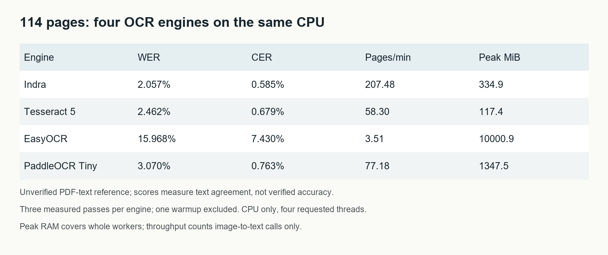
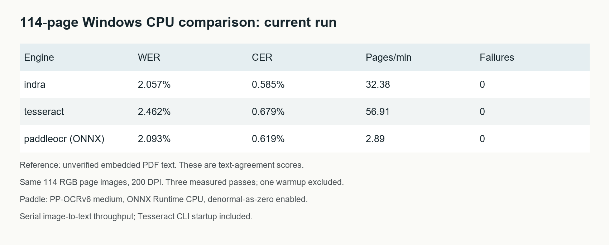
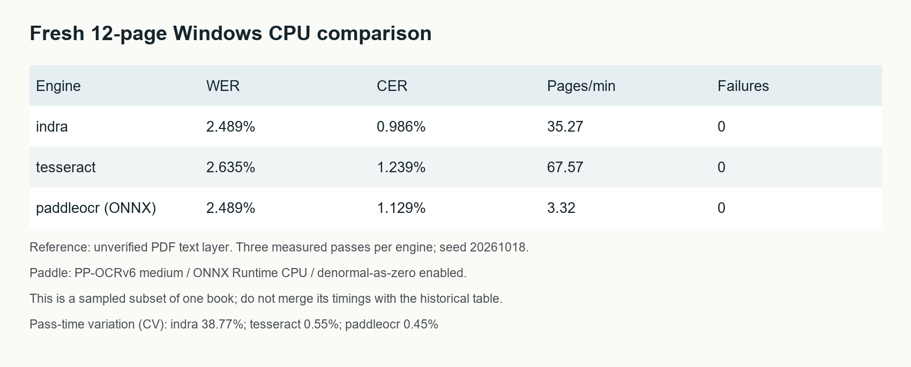

114 identical RGB page images at 200 DPI. Three measured passes per engine, one warmup excluded. All 342 saved first-pass predictions have been rescored from their text files.
This package supports a Windows case study. The PDF text reference is unverified. The 114-page table is historical; current ONNX and deployment measurements are separate below. Public annotated results: False.
Results, initialization and RAM · Updated Medium post preview

New reference comparison and sensitivity checks. The supplied transcription is not independently verified ground truth. Original reference scores and timing measurements remain separate.
114-page results, repeatability and resources

| Engine | WER | CER | Pages/min | Failures |
|---|---|---|---|---|
| indra | 2.057% | 0.585% | 200.57 | 0 |
| tesseract | 2.462% | 0.679% | 58.78 | 0 |
| paddleocr | 2.093% | 0.619% | 0.84 | 0 |
WER/CER count edit distance relative to the reference. Do not convert 100−WER into a probability of correct recognition. Tesseract CLI startup is included; Python models remain resident.
All three engines made zero word or character edits on a known-text synthetic control: 372 repeated words across three variants of one 124-word passage. This small clean-print control does not establish accuracy on real scans.
On the same control image, the original oneDNN configuration took 164.61 seconds. Plain CPU took 109.83 seconds; plain CPU with legacy IR took 110.56 seconds. Each completed with zero word edits. These individual cold runs are separate from the full-book timings. Single-thread oneDNN was stopped while still detecting after 136 seconds.
Configuration verified on control: True. Three measured passes after warmup; 0.591 control images/min; pass-time CV 0.57%. This is the three-image synthetic control, separate from full-book throughput. Full verification report.
Observed control-set speed ratio: 15.61x. All outputs match baseline: True. ONNX comparison and configuration.
Measured results and resources

Nothing has been posted to Medium. The source commercial book and its text/images are excluded from the shareable archive.